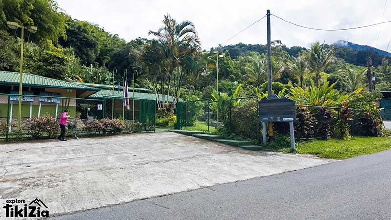

Cerro Chirripó Summit
3 days · Demanding · On request
$395 per adultPrototype A · “The Local Expert” — design direction only. Compare directions
Our specialty · 3-day trek
Costa Rica’s highest point at 3,820 m, reached the way locals do it — with the SINAC permit secured before you land, not scrambled for once you’re here.
Can you actually do this?
The trail gains roughly 2,470 m of elevation over 14.5 km to base camp, then another push before sunrise to the summit. No ropes, no technical climbing — just a long, cold, high-altitude hike that rewards people who train for it.
Where we actually help
SINAC releases roughly 52 spots a day, in blocks, months ahead. Most people find out about the system after the block they wanted is already gone. We track every release and register you the moment a slot for your dates opens.

The wider it is, the better our odds of matching an open SINAC block to it.
Blocks release on a rolling quarterly schedule and go fast — often within days.
Permit number, dates, and the exact registration you’ll show at the ranger station the day before.
Permits are issued by SINAC, not by Explore Tikizia — availability depends on the national park’s own release calendar. Exact current-quarter release date to confirm with client.
Practical
What’s included
Not sure this is the trip for you?
If you want the Chirripó valley without the permit or the climb, the full-day trip covers the base of the range — no quota, confirmed the moment you book.
3 days · Demanding · On request
$395 per adultFull day · Easy · Instant confirmation
$95 per adultVerified on Google
The service could not have been better. I recommend Explore Tikizia — and our planner, coordinator and driver, Rodrigo Santamaria — without reservation.
Rodrigo was beyond amazing. Knowledgeable, patient, and he made every part of the trip feel effortless.
From arrival to departure every event proceeded smoothly — pickups on time and knowledgeable guides throughout.
Prototype note: reviews are real Explore Tikizia Google reviews; none mention this specific trek by name.

From Rodrigo
“I’ve climbed this trail more times than I can count. The mountain doesn’t change — what trips people up is the permit system nobody explains properly. That part is on me, not on you.”